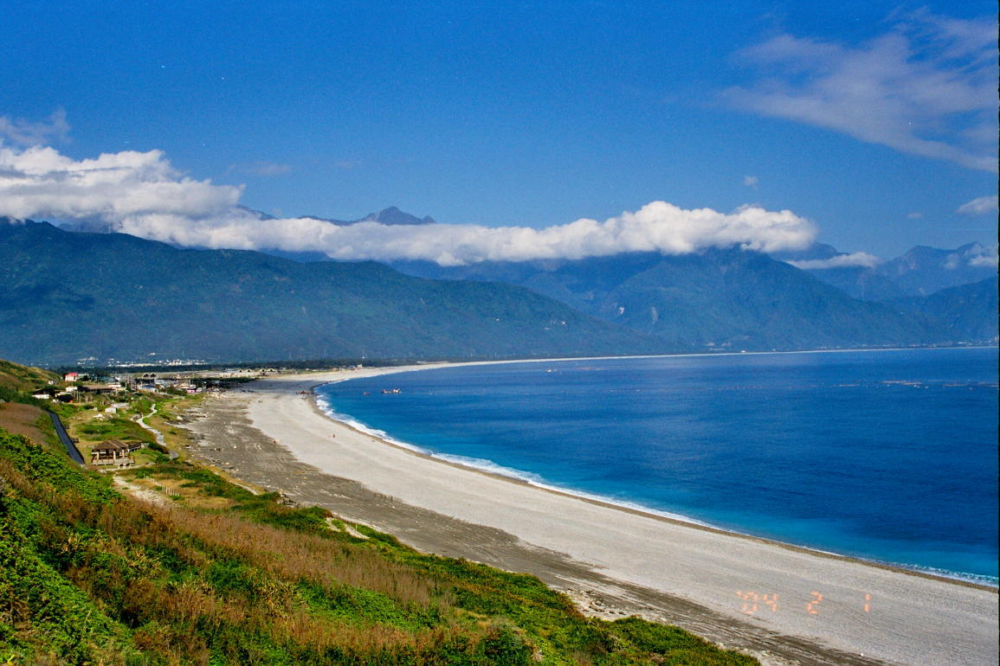

台灣
台灣擁有六個直轄市，分別是台北、新北、桃園、台中、台南以及高雄市，首都為台北市，但最大的城市為新北市。台灣面積約3.6萬平方公里，是世界面積第38大島嶼。台灣的最高點是玉山主峰，總共3,952公尺。人口方面，台灣約有2300萬人，分佈在島上各處。
選擇縣市
北部
依據行政院的劃分方式，台灣北部包括台北市、新北市、基隆市、桃園市、宜蘭縣、新竹縣及新竹市。當中人口約有1073萬人，佔總人口逾四成；而當中台北都會區為台灣人口最多的都會區，人口約688萬人，逾近總人口的三成。
選擇縣市
中部
台灣中部包括苗栗縣、台中市、彰化縣、南投縣、雲林縣，是台灣的農業重鎮、亦都是台灣中小企業與精密機械最重要的聚集地，人口約579萬人。當中台中彰化都會區是全國第二高人口的都會區，唯此統計方式已停止使用。
選擇縣市
南部
台灣南部包括嘉義縣、嘉義市、臺南市、高雄市、屏東縣及澎湖縣(不計入台灣本島)，產業發展涵蓋第一至四級產業，人口約624萬人。當中台灣最長的河—濁水溪，位於與台灣中部的交界；至於第二長的河—高屏溪，就位於台灣南部。
選擇縣市
東部
台灣東部包括花蓮縣以及台東縣，指地區東朝太平洋、是全臺灣海岸線最長的地區。台灣東部多山，故此相較西部人口密度較低，人口亦只有約53萬人。
呂柏漢
喜歡旅遊、運動，也愛與人相處
陳思良
我是來自香港的陳思良，現在是資傳系設計組的二年級生。 通過期末專題，我更加了解台灣的地理、文化以及編寫程式製作網頁。

黃蓉
資訊傳播學系設計組三年級。
是一個隨和的人，平常的興趣是聽音樂、畫畫，偶爾也喜歡去看展。
劉至恩
資傳系三年級設計組。同時具備設計以及程式能力。對於知識與各式技藝皆感興趣，喜歡摸索未知事務。
最近在專研樂器，諸如鋼琴、二胡以及竹笛。以及接觸各種音樂專研他們的技術與編曲。